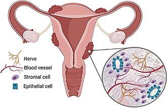
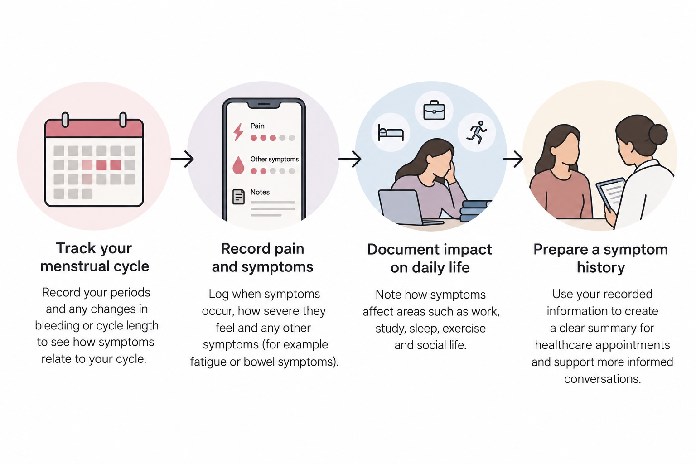

Endometriosis
Endometriosis is a chronic disease in which tissue similar to the lining of the uterus grows outside the uterus. It can cause symptoms such as severe pelvic pain, painful periods and fertility problems.
Symptoms can vary considerably between individuals and may affect daily activities, work, relationships and overall quality of life.

Image: Hogg, Horne and Greaves, CC BY 4.0, via Wikimedia Commons
How Digital Health Can Help
Endometriosis symptoms can change throughout the menstrual cycle and may affect different areas of daily life. Digital tools can help patients document these experiences over time and organise information that may be useful during healthcare consultations.

Digital tracking can help patients document menstrual cycles, symptoms and their impact on daily life before healthcare consultations
Image: AI-generated with ChatGPT (OpenAI), 2026.
Pain & Symptom Tracking
Digital symptom diaries can help patients record when pain occurs, how severe it feels and how symptoms change throughout the menstrual cycle. Tracking symptoms over time can make recurring patterns easier to recognise and discuss during healthcare appointments.
Impact on Daily Life
Digital diaries can also be used to record how symptoms affect everyday activities such as work, study, sleep, exercise and social life. This can provide a broader picture of the impact of endometriosis beyond pain alone.
Menstrual Cycle Patterns
Menstrual tracking tools can help patients document when symptoms occur in relation to their cycle. Recording changes in bleeding, pain and other symptoms over several cycles can help create a more organised symptom history for discussion with a healthcare professional.
Preparing for Healthcare Consultations
A structured digital symptom history can help patients prepare for healthcare appointments. Information about pain, menstrual symptoms, daily-life impact and changes over time can support clearer conversations with healthcare professionals.
When to Seek Medical Advice
Consider speaking with a healthcare professional if pelvic pain or painful periods are severe, persistent or affecting daily activities. Symptoms such as pain during or after sex, pain when using the toilet during menstruation, or concerns about fertility should also be discussed with a healthcare professional.
Digital symptom records can support these conversations, but they do not replace professional medical assessment, diagnosis or treatment.